In the beginning, I looked through the requirements and came up with the website layout which I thought would cover all the requirements, like the Fig1. At this time I am not focusing on the visual aspect but the layout aspect. However, when I began to search stuff for my project, I found a website JOHN SNOW’S INTERACTIVE CHOLERA MAP(Victor Mateevitsi 2009)[1] which is very similar to my project, I knew that I might mistake the meaning of the requirements, and changed it to another layout, the Fig 2.
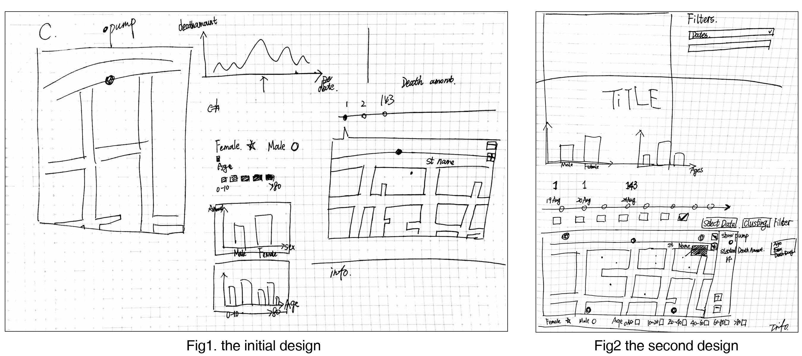After the layout design, I began to read D3 book "Interactive Data Visualization for the Web with D3"(Scott Murray, March 2013) [2]. I used about 2-3 days to create the map using JSON, which is made by the python. I listed the requirements of the JSON data format and asked my undergraduate classmate Yihuang Cai[3] to help me write the python.
Since the JSON data was ready, I then began to complete the project requirements. As my Bachelor in software engineering, I did not care much about the visual but just focused on completing the function that I could do, just like this:
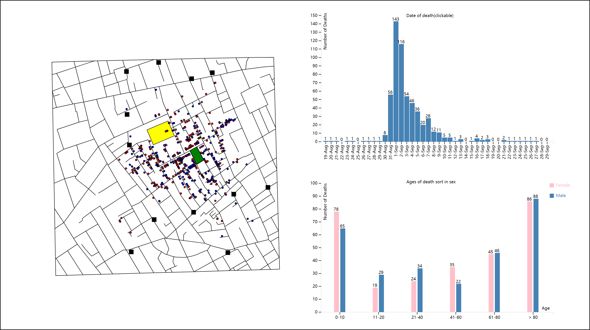Fg3.I was working on the chart function
When the functions were done, I began to focus on visualization that I worked with my teammate Huang Fu. He helped me to choose a template on the web and helped me to modify my website. Actually, I am weak at visual design, so Huang helps me a lot! Then I modified the functions, layout, and color of the project page, made it looked in a comfortable way. As you can see, I did not follow my initial design, because I am a totally new web developer when I was doing my project, I found that the initial design is difficult for me to follow, so I changed my design in the coding procedure. Also, the Victor Mateevitsi’s website[1] helps me a lot to understand the functional requirements.
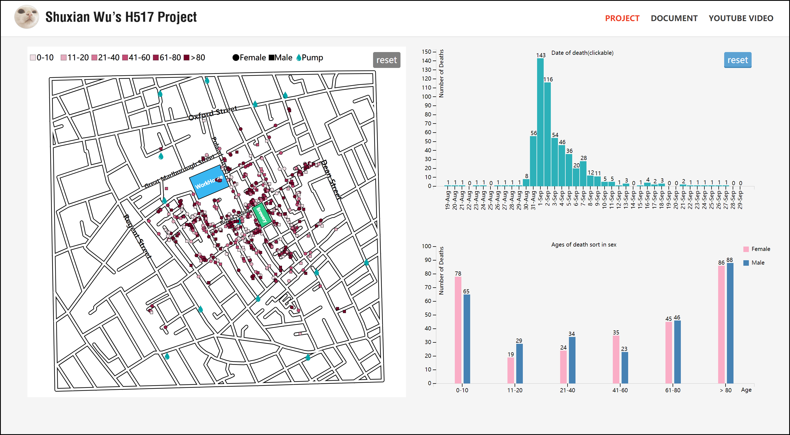Fg4. the final page
As the requirements mentioned “1.ability to easily see on the map whether each victim was male or female 2.ability to easily see on the map the age of each victim” and the exact meaning from professor, I need to show the data into female and male, and the age of each victim. So, I just chose a simple way that the female is circle, the male is rectangular, and used different color in saturation sequence to identify the age so that it can be identified both in sex and age. Also, the set of color has been tested by colororacle[4].
I just modified the line map to make it looked more like a street map.
At the beginning, I just used bigger black rectangular to represent the pump. However, it looked terrible when adding death points as the Fg3 shows. So I found another picture which might be kind of representative pump and simple shape icon to replace the rectangular(The most typical one as Fg5 shows, I did not choose because I knew a classmate is using). When there is much other graphical information on the map, the secondary information in a simple and different color range to help the user filter out this secondary information in order to focus on important information and reduce visual interference.
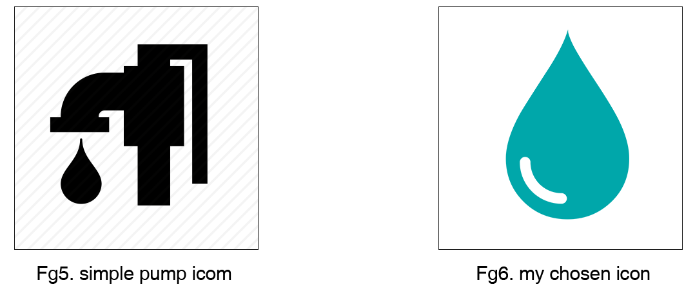As the first B requirement “more data to the map - major street names and the location of the brewery and the work house”, I think these are not the main information that uses would like to know initially, so the street name I made it small with thin white stroke,make it easy to catch but not in detail, and the buildings color in totally different color from the death points, and the building name in white color which reduces the visual interference.
As the C requirement on timeline graph, it needs to not only show the number of deaths per day but also be clickable to choose which day to visualize the deaths on the map. So, I chose bar chart with the number on the top of each bar which is easy to click a bar to choose which day, even though I know that line chart would be more proper to show the trend of the number of deaths per day. As for the color that I chose, it is from Huang’s option. He used to be a visualization designer in E-Business company, I believe his choice. The color looked soft and matched with the set of death points color.
Since this graph aims to compare, the bar chart is very suitable. As the bar color of female and male, I use pink(#faadc6) for female and blue(steel blue) for male as people common sense that red for women and blue for men. These two colors are also from Huang’s choice while I think it is matched the whole website color style.
At last, the button style is from website template, I think it’s obvious so that when users do some operation, they can notice the buttons.
Here are the color test by Colororacle[4].
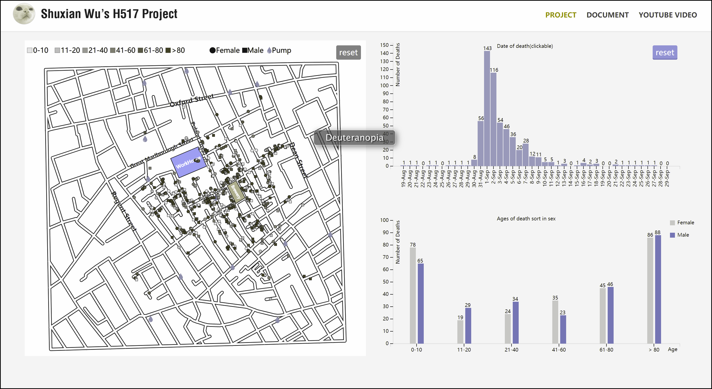Fg5. Deuteranopia(Common)
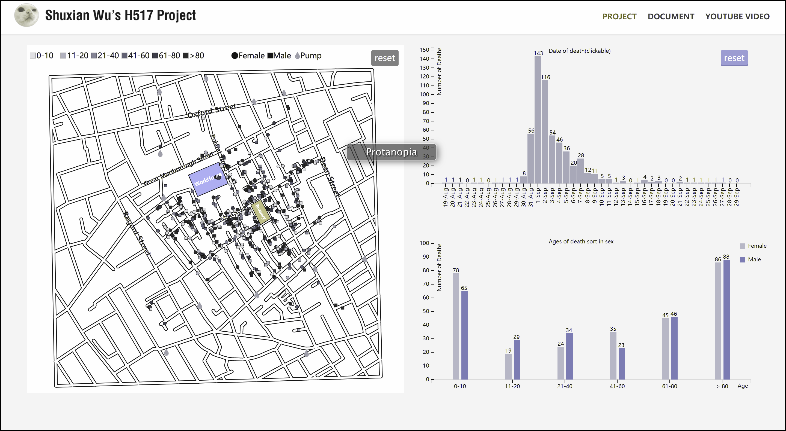Fg6. Protanopia(Rare)
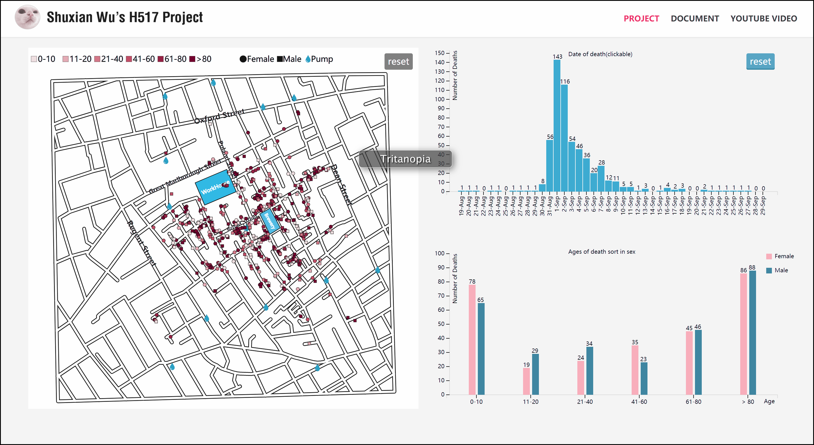Fg7. Tritanopia(Very rare)
It is easily to see that the biggest number of deaths is at 1-Sep and the subsequence is at 2-Sep. Through the chart on the top, I can get that the number of deaths mainly concentrate between 30-Aug to 7-Sep. When focusing on the 1-Sep, the map shows that the deaths mainly concentrate on Broad Street, and the color of death points show that the age is mainly concentrate on >80.
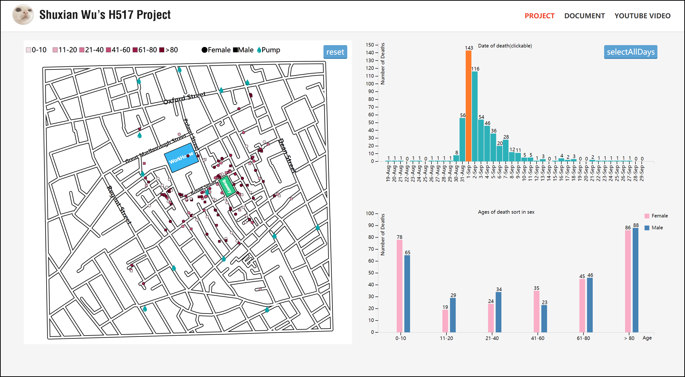Fg8. Distribution of deaths on 1-Sep
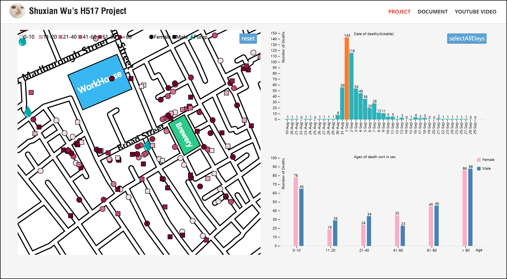Fg9. Magnified screenshot of the concentrated area on 1-Sep
I filter per day before 1-Sep. Between 17-Aug and 29-Aug, the death is very little but most of the death near the Broad Street and their water would be from the Broad Street pump. As on 30-Aug, the number of deaths is 8, when focusing on this day, the distribution of deaths shows as Fg9. One death very near the pump since the former days there are 3 deaths also near the pump’s street.
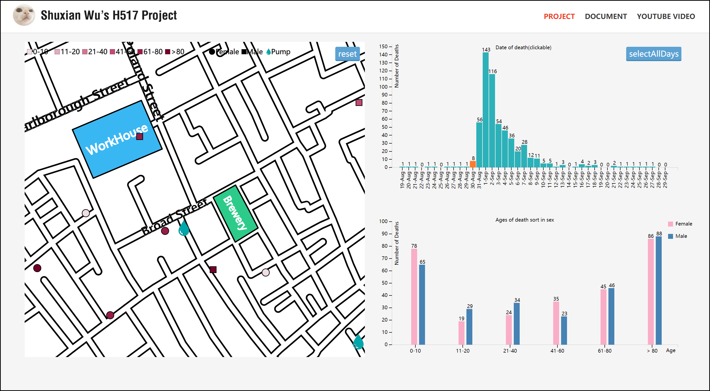Fg10. Distribution of deaths on 30-Aug
When focusing on 31-Aug, the death of people rise up about 7 times of that on the former day(Fg10)! And the age of deaths mainly concentrates on 0-10 and >80, which is the poor physical resistance group. This time, the deaths are more near the Broad Street pump and the number of deaths which near the pump also gets bigger. So, combining with John Snow’s hypothesis, it is reasonable that the pump in Broad Street was contaminated and caused the culprit of death.
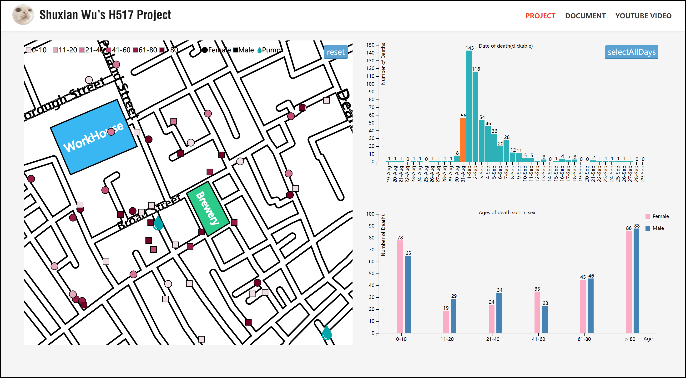Fg11. Distribution of deaths on 31-Aug
I filter per day after 11-Sep, and the data shows that these deaths are mainly concentrated on the Broad Street or using water from the Broad Street pump and their ages also mainly are 0-10 or >80, which I can assume that the deaths may be caused by the remainder of virus in the water or on the pump. And as common sense, 0-10 and >80 (especially for female) is the group that in poor physical resistance, so it is reasonable that the deaths were caused by the remainders of cholera, since there is almost no 21-60 age death.
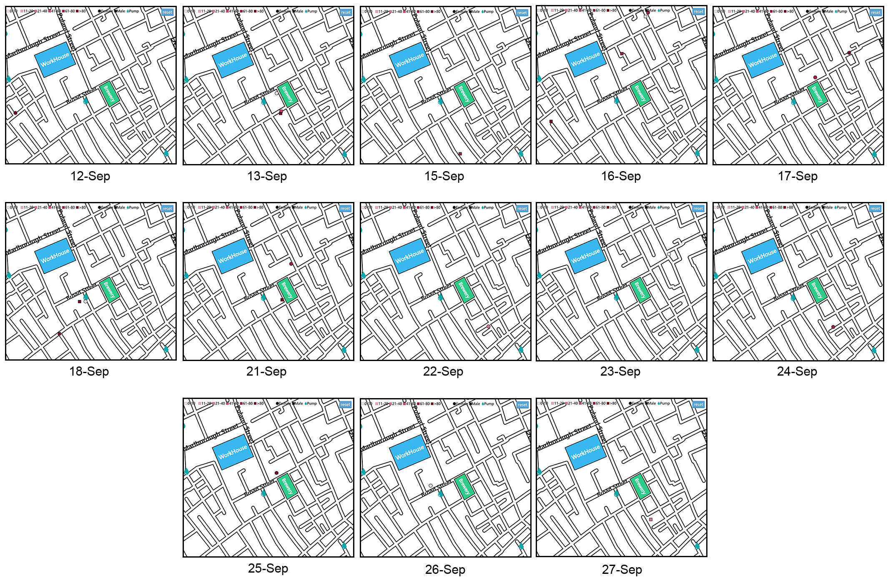Fg12. Distribution of deaths between 12-Sep and 27-Sep
My JSON data is from the python script which is written by my undergraduate classmate Yihuang Cai[3]. My style css is one of the models from China webmaster[8] where there are many good styling codes for free. My main function codes are from the D3 book[2], the stackoverflow[5], the bl.ocks[6], and the github[7] where there are many sources of D3 API and functions.
[1]Victor Mateevitsi 2009.JOHN SNOW’S INTERACTIVE CHOLERA MAP http://www.vmateevitsi.com/2009/09/01/john-snows-interactive-cholera-map/
[2]Scott Murray, March 2013.Interactive Data Visualization for the Web with D3 http://chimera.labs.oreilly.com/books/1230000000345/index.html
[3]Yihuang Cai, help to generate JSON data with python. The link is his homepage. http://chellynov.github.io
[4]Colororacle http://colororacle.org
[5]StackOverFlow https://stackoverflow.com
[6]Bl.Ocks https://bl.ocks.org
[7]D3 Github https://github.com/d3/d3-3.x-api-reference
[8]China Webmaster(style template) http://sc.chinaz.com